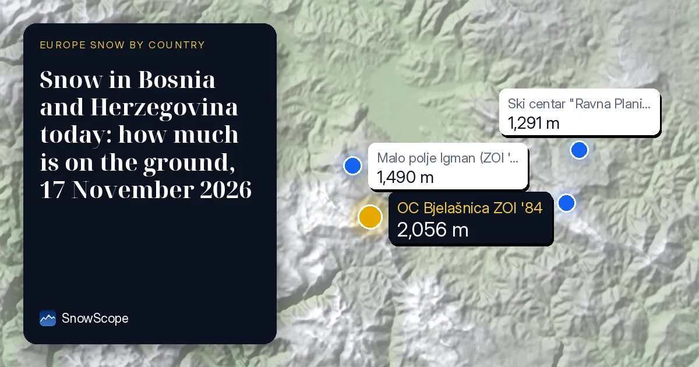

Snow in Bosnia and Herzegovina today: how much is on the ground, 17 November 2026
Snow on the ground has shrunk sharply: only 20 km² remains white across Bosnia and Herzegovina on 17 November, down from 490 km² just one day earlier. The melt happened fast, but a wetter pattern is coming in the week ahead, and mountains above 1,500 m will see real accumulation.
See the live snow forecast for OC Bjelašnica ZOI '84 in the SnowScope appSnow depth, powder alerts and the 3D map, free.
What happened to the cover
A sudden drop of 470 km² in a single day shows how quickly mild air stripped snow from lower slopes. Seven days ago, 160 km² were white; the loss since then has been 140 km². This is the rhythm of early season in the Balkans: brief flurries follow warm spells, and nothing sticks until the mountains cool down and snow arrives on a frozen base.
Height tells the story. Between 500 and 1,500 m, the land is now bare. Only above 1,500 m does the map show any white at all—less than 1 % of that band, with a trace under 1 cm on average. The snow line sits high, well above the ski resorts that depend on November snow to hold onto winter.
| Resort | Snow depth | New snow, 72 h | Coming, next days | Top |
|---|---|---|---|---|
| OC Bjelašnica ZOI '84 | 0 cm | 0 cm | 1 cm | 2,056 m |
| Igrišta olimpijski centar | 0 cm | 0 cm | 0 cm | 1,346 m |
| Jahorina olimpijski centar | 0 cm | 0 cm | 0 cm | 1,886 m |

Three dry days behind us
The last 72 hours brought no fresh snow to any part of the country. Even the highest peaks, where Bjelašnica and Jahorina usually trap the first flakes of the season, saw nothing fall. This dry spell is what allowed the melt to run so deep.
Bjelašnica and Jahorina region, the best-placed ground for snow across Bosnia and Herzegovina, has 5 cm stored from the previous week. That is a foundation, but a thin one. It needs cold nights and fresh accumulation to survive the thaw cycle.
The resorts' view on 17 November
All 12 resorts tracked across the country report zero snow on their slopes today. OC Bjelašnica ZOI '84, the highest at 2,056 m, sits completely bare. Igrišta olimpijski centar and Jahorina olimpijski centar have no cover either. Early season is a waiting game, and this year's wait has just begun.
The absence does not mean the season is lost. It means the first real snow event will matter enormously. When it comes, it will land on warm ground and melt quickly unless cold holds. The forecast tells us that cold is about to arrive.
What the next week holds
The outlook shifts sharply after 17 November. In the next three days, expect up to 1 cm on the snowiest slopes. That is not enough to open roads or slopes, but it marks the turn of the season. By day seven, the forecast reaches 15 cm across the region, a jump that reflects the arrival of a wetter, colder air mass.
Monday 23 November stands out as the snowiest day in the forecast: up to 11 cm could fall in a 24-hour window. This is the event that skiers and water managers have been waiting for. After weeks of autumn-like warmth, the mountains will finally look white again.
Temperature and timing
Firm snow in the early morning and slush by mid-afternoon describe the rhythm of these early-season days. The ground is still warm, so each night freezes the surface and each day softens it. This pattern continues until the first big snow event resets the base and cold locks in for the season.
Once that happens—likely around 23 November—the snowpack begins to build on a solid foundation. Overnight cold will keep it firm, and new snow will stick instead of vanishing into the soil. This is the threshold between autumn snow and winter snow.
Where to watch
Bjelašnica and Jahorina are the two mountains to watch. They sit higher than the other resorts and catch the first real snow. By 23 November, they should have measurable depth where none exists now. Lower slopes will still be thin or bare, but the mountains will have turned white.
The water outlook also matters. Eleven centimetres on 23 November means significant runoff as it melts, and each fresh event adds to the winter reservoir. Bosnia and Herzegovina's mountains feed rivers that supply towns and reservoirs across the region. Early snow feeds spring water.
Tips for skiers
- Do not travel to a resort yet. Check its own lift status before you plan a trip, even after 23 November, to confirm it has begun operations.
- When snow does fall on warm ground, it settles and densifies fast. Afternoon slush is common; ski or ride in the morning when the base is firm.
- South-facing slopes warm quickly in November. Seek north-facing terrain in the afternoon to find the best snow texture.
- The forecast shifts easily this time of year. Check back for updates as the week progresses and the snowiest day approaches.
- If you venture off-piste, check the official avalanche bulletin for the region before you go. Thin early-season snow can hide rocks and uneven ground.
About these numbers
Resort snow depths are the deepest snow on the resort's upper slopes on the date shown; they are estimates for an area, not a measurement at one point. Forecasts can change. Always read the official avalanche bulletin before going off-piste.
Cite this report
For research, teaching or the press: the numbers and charts are free to reuse under CC BY 4.0 with this citation.
SnowScope (2026), Snow in Bosnia and Herzegovina today: how much is on the ground, 17 November 2026, https://snowscope.app/blog/en/2026/11/bosnia-and-herzegovina-snow-report-17-november-2026.html, accessed 2026-11-17
SnowScope (Atlas Labs). (2026, November 17). Snow in Bosnia and Herzegovina today: how much is on the ground, 17 November 2026. SnowScope snow reports. https://snowscope.app/blog/en/2026/11/bosnia-and-herzegovina-snow-report-17-november-2026.html
BibTeX
@misc{snowscope2026bosniaandherzegovinasnow,
author = {{SnowScope (Atlas Labs)}},
title = {Snow in Bosnia and Herzegovina today: how much is on the ground, 17 November 2026},
year = {2026},
month = nov,
howpublished = {\url{https://snowscope.app/blog/en/2026/11/bosnia-and-herzegovina-snow-report-17-november-2026.html}},
note = {Published 2026-11-17 13:21 UTC; accessed 2026-11-17}
}· CC BY 4.0 · Methods, data and tools →
OC Bjelašnica ZOI '84: snow and temperature by height, this winter vs last (tools) →
Follow OC Bjelašnica ZOI '84
Free: a message when fresh snow is coming, and the forecast every morning.
More snow reports

Savin Kuk above Žabljak picked up 22 cm of snow from 13 to 19 November and still has 6 cm today. Kolašin 1450 and 1600 are bare. The week day by day, and the next chances.

We compared the snow on 10 November with each winter's deepest snow at 46 ski resorts over 46 winters. A snowy start helps, but less than many skiers think.

Up to 30 cm of snow fell on northern Velebit and Bjelolasica on Friday 13 November 2026. By Tuesday it was gone. Day by day, what the mountains kept, and when snow comes back.